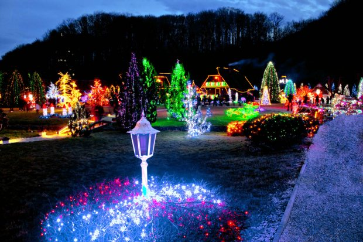
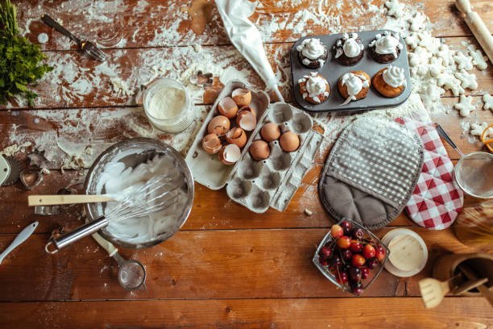
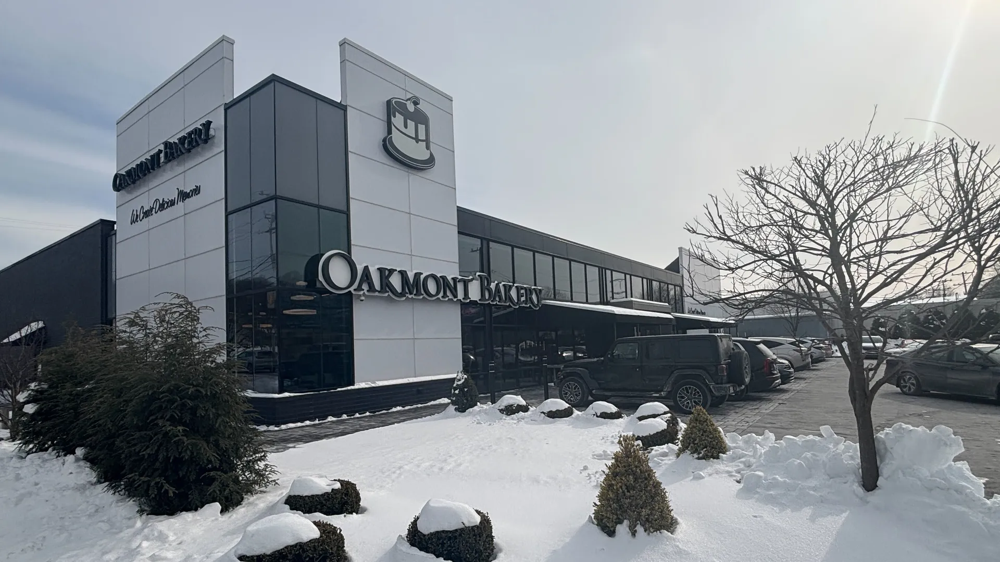
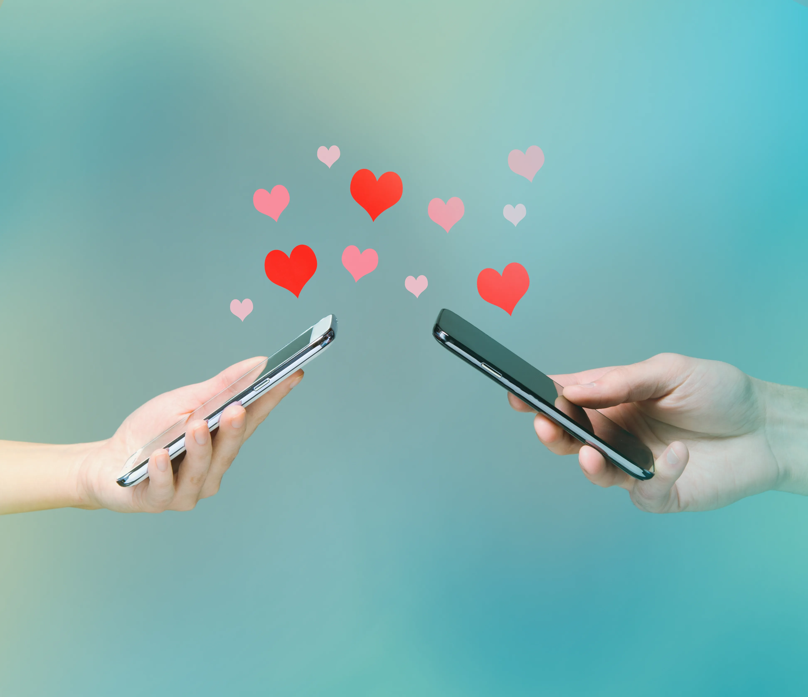

You have unlocked unlimited preorders for one whole week. (redeemable onsite)
I wish I could fly out to you for Valentines but I don't think I can make it happen just yet. But that doesn't mean we can't have some fun. select any or all the ideas below to determine what kind of fun we will have!
click on the envelope to see the letter inside
Dear Sarah Ann,
I can't explain how overjoyed I am to have you in my life. When you were here you were half of my motivation to go to YSA activities. Knowing that I would get to see and talk to you was more than enough to get me to brave the bus system. Even after you changed wards I loved coming over to your house after church or activities (or instead of activities) to spend time together. You Make me feel good about who I am now and make me want to become an even better person in the future. I worry I am not doing enough to do the same for you. So I want you to know that you are a BEAUTIFUL hottie with an amazing personality that deserves only good things in life. I know that my life has improved tremendously since meeting you and I can't imagine how anyone could not want your light in their lives. You've talked about how there are things in your life you've gone through and I can't help but be surprised after every revelation. You are so strong and joyful that I can't imagine that the happy person I know went through so much. You are truly a Diamond in the rough and I am so glad that you are just as strong and don't let anything or anyone shatter who you are (because I really like who you are). There's plenty more I can (and will eventually) say but for now I hope you know how amazing and beautiful you are, inside and out.
Love,
Miles Cornelius Hamilton
Some Memories So Far |
||
|---|---|---|
|

Christmas LightsChristmas Lights with Sarah Ann are probably the only reason to ever be walking outside at night in freezing temperatures. Thanks for sharing your Christmas tradition with me. From watching the night up light downtown, dazzling nights wherever that was, or just walking/driving around different neighborhods, I am so glad I got to share so many fun nights with you. Hopefully we can do some Christmas decorating of our own some time. |

R.I.P. FrankieWe spent lots of late nights in that car. Some scary nights, Driving through that snowstorm and cleaning the car out and when she wouldn't start (good times). But there was also some of the best nights. Staying up late talking with you were some of my favorites parts of super week. And we shared more than a few kisses that I won't soon forget (until you help me make some new memories ) |

BakingOne of the first things we did together and also some of my favorites. I might have underplayed my baking skills a little but too be fair cookies do have a way of turning out weird when I am around. I am so glad that you kept inviting me over and glad that I stopped being dumb and eventually went over to bake at your house (I had to make sure you knew my real name first (its Miles by the way)). From cookies, to donuts, and FRY BREAD! I enjoyed every second of our culinary journey together! |

Watch PartiesAnd I don't just mean Zootopia. All the times we've watched stuff together. From Anime, enemies to lovers fairy musicals, Polar Express, Dash and Lily, and even the bee movie! Whether we are holding hands in a theater or streaming from states away I love being able to look over at you while watching to see your reactions. There are so many things I still want to watch with you and even if we don't watch Star Wars I look forward to cuddling up and sharing stories with you! |

OakmontI know I bring this up so often but going to Oakmont Bakery and Walking around with you holding your hand looking through all the little shops is still one of my favorite memories. A peaceful day with sweet treats and even sweeter company (wow that was corny). |

phone CallsWhile I wish we could be closer I have loved our long distance phone calls and texts. Whether we are sending weird would you rather questions till we fall asleep. Or doing our tradition (although lets normalize choosing a topic lol). You send the best funny videos and I am always happy to see a notification on my phone from you! |
I have told you before my favorite things about you but here they are again just so you don't forget
First and foremost, you, Sarah Ann are a hottie. I know, how superficial of me. But it just can't be denied. When you give me those looks (you know the ones), I can't help but get distracted staring at your beautiful face and wishing to Kiss you. Despite being gorgeous, you also have an amazing personality! I admire how you can have the confidence to truly be yourself, even if you know there will be some (dumbos) who don't like it. It also helps that you are such a Kind and fun person. There are numerous times I catch you going out of your way to make people feel cared about and leave them feeling just a little better than before. I know you have definitely done so for me. Another reason, besides your kindness, I love talking with you is that you don't take life too seriously, despite how serious it can get. You have this way of easily being able to find humor in things. You are always willing to tell or hear a good joke. I am so glad that our sense of humor overlaps. I love being able to laugh with you at jokes that may or may not get us canceled. Going through all the videos you send to me is a sure-fire way to get some laughs out of me, even if half of them are 9/11 jokes. Basically, everything is better with you. You have easily become one of my favorite people to spend time with. No matter what we are doing, even if we are just driving or running errands on snow-covered roads, I am happy to be spending time with you. I am slow to reveal my true self to most people, but I don't feel as worried about putting on a performance when I am around you. I can just be myself. I think that speaks volumes to who you are as a person. I am glad you are in my life and I hope to continue making great memories with you!